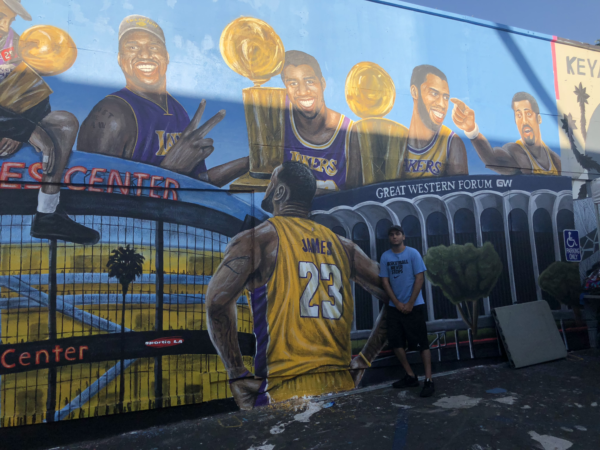

Saahil Vasdev
About me
I am currently a sophomore at the University of Washington Bothell studying Computer Science & Software Engineering. In my free time I enjoy watching sports and playing video games.
Here are some of the music artists I listen to:
- Kanye West
- Jay-Z
- Travis Scott
- Lil Uzi Vert
During the quarantine, I've been catching up on a lot of TV shows. I recently started watching a show on Netflix called Trailer Park Boys. If you are into comedy I would totally recommend this show to you. I've also had the chance in playing some new video games such as Warzone and Valorant.
What I want to learn
Learning languages such as Java, C#, & C++, I've always wanted to learn HTML and CSS. When I was selecting courses for this quarter, I was so glad that UWB offered a class that highlighted the basics of HTML and CSS. With the skills I learned from this class, I hope to make a basic website in the future to showcase some of my work from my classes taken here at UWB.
Get in touch with me!
I am always available to discuss anything. You can reach me through my email, skv21@uw.edu. If you have a LinkedIn, please connect with me on there as I am looking forward to discuss with you any opportunities down the line for me!
Here is a picture of me in LA
Brandon Hu
About me
I am a currently a junior at the University of Washington Bothell. My major is Applied computing and I have experience with Java and C++. Currently, I am working at the UW/Cascadia College as a student tech consultant where I help patrons with printing and common computer issues.
Here are a few classes I have taken:
- CSS 142 & 143
- CSS 342 & 343
- CSS 310
- BPHYS 121 & 122
- STMATH 124, 125, & 126
I am interested in computer networking and home automation. In my free time I like to game, make music, or just sleep. During this quarantine, I am trying to learn how to play Chopin's Nocturne No. 20 in C-sharp minor, Op. posth. I have a younger brother and a dog. Also, this is my favorite color (or close to it at least).
Here is my dog Coco: